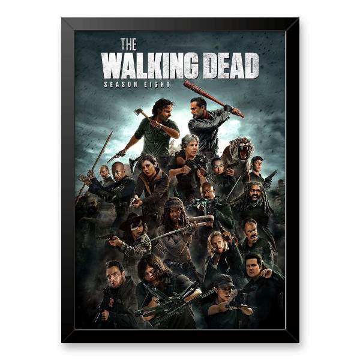
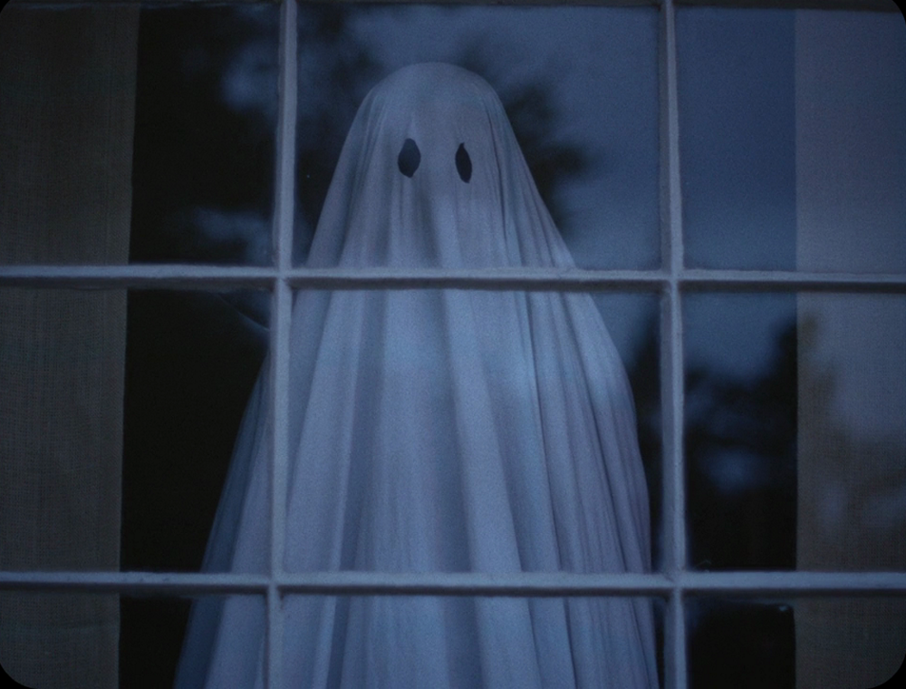
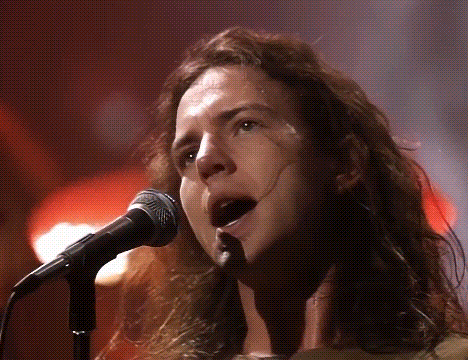
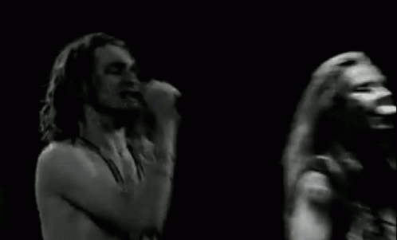
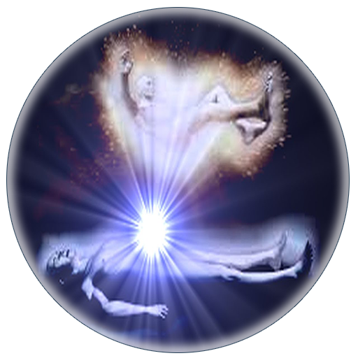
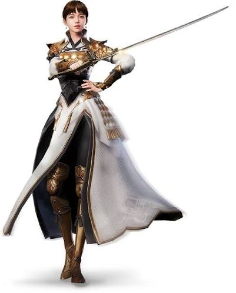
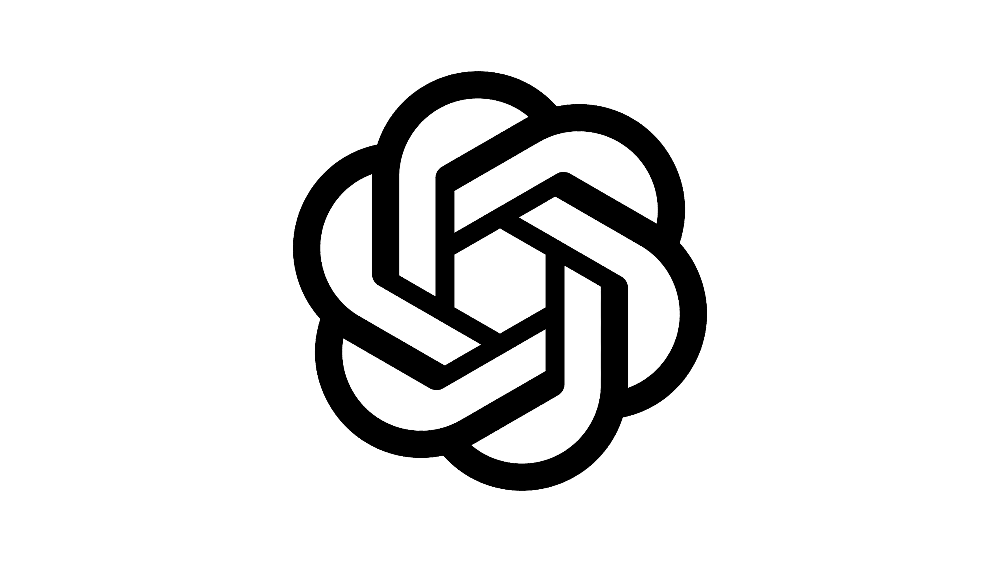

Dica de série:

Imagine um futuro onde o planeta foi dominado por uma doença em que todos os mortos voltam à vida como zumbis e tudo o que se conhece muda drasticamente? Essa é a premissa da série The Walking Dead, que acompanha um grupo de sobreviventes em busca de segurança e esperança em meio ao caos. Atualmente você pode assistir a série na Netflix, que possui todas as temporadas disponíveis para maratonar. A série é baseada na história em quadrinhos de mesmo nome, criada por Robert Kirkman, Tony Moore e Charlie Adlard. Acesse a série na Netflix
Um filme: A Ghost Story

A Ghost Story é um filme delicado e poético. Algumas pessoas podem achar que é um filme de terror, mas não é. É um filme sobre a vida, sobre a morte e sobre o que acontece depois da morte. É um filme sobre a memória e sobre como as pessoas lidam com a perda. Simplesmente o filme mais lindo que já assisti. Uma curiosidade é o fato de que o filme foi filmado em apenas 15 dias, com um orçamento muito baixo, mas com uma equipe talentosa e dedicada. Assista ao trailer do filme
Pearl Jam:

Pearl Jam é uma banda de rock alternativo formada em Seattle, Washington, em 1990. A banda é conhecida por seu som distinto, que combina elementos de punk rock, hard rock e grunge. Pearl Jam é uma das bandas mais influentes da década de 1990 e continua a ser popular até hoje. Minha banda do coração. Consegui assistir a um show deles em 2018 e foi uma experiência inesquecível. A energia da banda e a conexão com o público são incríveis. Acesse o site o canal oficial da banda no YT
Alice in Chains:

Layne Staley foi o vocalista da banda de rock Alice in Chains e Mad Season. Ele é conhecido por sua voz poderosa e emotiva. Partiu em 2022, mas deixou um legado musical que continua a influenciar músicos e fãs em todo o mundo. Sua música é uma expressão de dor, luta e esperança. Acesse o canal oficial da banda no YT
Um podcast para chamar de Meu: Saulo Calderon

Saulo Calderon é um podcaster brasileiro que aborda temas relacionados à espiritualidade, autoconhecimento e desenvolvimento pessoal. Seus episódios são envolventes e oferecem insights valiosos para quem busca crescimento interior. Acesse o canal oficial do Saulo Calderon no YT
Dica de jogo: MIR4

MIR4 é um jogo MMORPG NFT, com ótimo gráfico e jogabilidade. Ambientado em um mundo de fantasia inspirado na mitologia oriental, os jogadores podem explorar, lutar contra monstros e outros jogadores, e coletar recursos para melhorar seus personagens. Possui um sistema de economia baseado em blockchain, permitindo que os jogadores negociem itens e moedas dentro do jogo,além de possibilitar a mineração de criptomoedas. É um jogo que combina elementos de RPG, ação e estratégia, oferecendo uma experiência envolvente para os jogadores. Baixe o Mirinha aqui para celular Baixe o Mirinha aqui para PC
Dica de tecnologia: ChatGPT

ChatGPT é um modelo de linguagem natural desenvolvido pela OpenAI. Ele pode responder a perguntas, criar textos, ajudar em tarefas de escrita e muito mais. É uma ferramenta poderosa para diversos propósitos. Baixe aqui